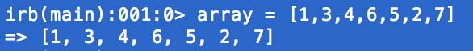
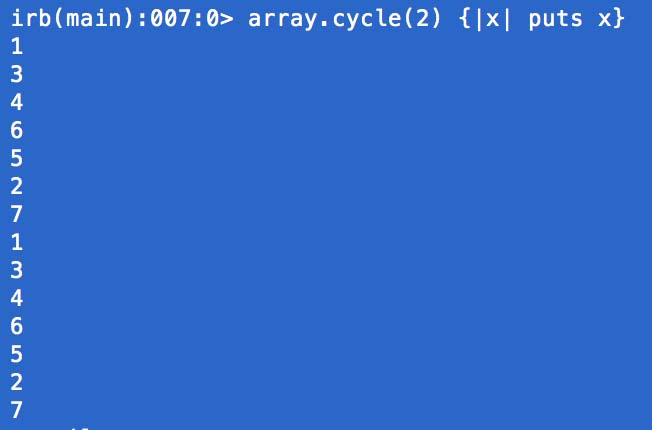
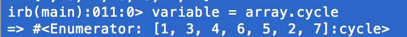
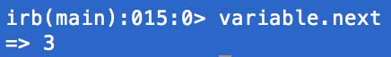
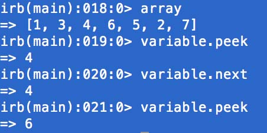

Ross Reckons


Today I'm going to drop some knowledge on you about the cycle method in Ruby. First of all it's worth mentioning that that this is a method provided by the enumerable module. The enumerable module? That word enumerable sure is tossed around a lot when you're using ruby. The general definition of enumerable (accoring to that wild google dictionary thing) is something that's "able to be counted by a one-to-one correspondence with positive integers." For today's intents and purposes let's keep things simple and say it's just something that's countable. This means that enumerable methods are applied to things like hashes, arrays, and ranges (if you're scratching your head about what hashes and arrays are then you must have forgotten to read my last post).
Now that that is settled let's dig into the cycle method. Generally, the cycle method will do exactly what you expect - cycle through an array, hash, or range (or any other enumerable). Let's take a look. Here is my array (cleverly named "my_array") with a series of integers:

The cycle method takes and argument of how many times it should cycle through your enumerable and a block for you to specify what it should do as it's cycling. For now, I'm just going to have it cycle through twice and print each digit: 
One thing to be careful about here is if you don't add in an argument for how many times cycle should run or if you don't have a condition that would break the cycle, it will run FOREVER... or until you manually quit the process, but it's still something you want to avoid.
OK, OK, I know what you're thinking. This cycle things seems pretty straightforward, and if you compare it to some of the other enumerable methods like each or inject, it doesn't seem as useful - BUT YOU'RE WRONG. Actually, you're not wrong (at least as I understand it now), but there are some cool things you can do with it! Let's set our array with the cycle method equal to a variable (I'm going to use all of my remaining imagination and call that variable "variable"): . When we do that, ruby returns "
Guess what happens when I do that again. It gives me the next value in the array! .
This could be applicable if you have a series that you want to iterate through with more control and not all at once. Let's say our array wasn't a random set of numbers but was actually the days of the week, we could use this to sequence through the days of the week when we need to. Also, if you forget what comes next but don't actually want to move to that value, you can use the peek method. Let's see this in action! First I'll call the array, to refresh your memory as to what the values are, then call peek, then next, then peek again. Here's what happens: 
I hope this was a fun little lesson. I certainly enjoyed it! If you have any feedback, use those links in the top right corner. I want to hear what you think!
Archive